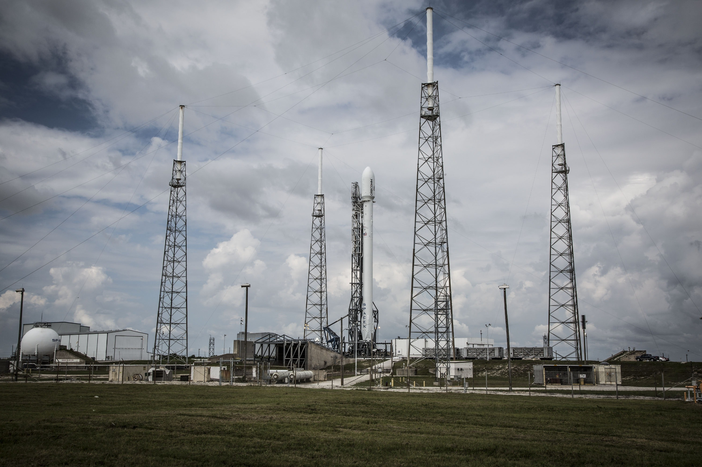

Notícias
Veja abaixo três das principais notícias relacionadas a Indústria, Infraestrutura e Tecnologia.
Indústria 
Novo padrão global para o setor de mineração visa melhorar a segurança das instalações de rejeitos.
Os Objetivos de Desenvolvimento Sustentável (ODS) são uma agenda mundial promovida pela Organização das Nações Unidas (ONU) composta por 17 objetivos e 169 metas que visam erradicar a pobreza, promover a prosperidade e o bem-estar, proteger o meio ambiente e amenizar o avanço das mudanças climáticas.
1. Colaborar para o desenvolvimento de infraestruturas de qualidade, confiáveis, sustentáveis e resilientes, de modo a apoiar o crescimento econômico e bem-estar social e humano.
2. Impulsionar a industrialização acessível, inclusiva e sustentável, aumentando assim a participação do setor industrial no PIB de países menos desenvolvidos, levando em conta condições nacionais.
3. Ampliar o acesso de pequenas indústrias e empresas através de incentivos financeiros e de crédito, proporcionando assim sua integração em cadeias de valor e mercado.
4. Modernizar infraestruturas e indústrias, tornando-as mais eficientes, sustentáveis, limpas e tecnológicas, de modo a caminhar rumo ao desenvolvimento econômico de forma sustentável.
5. Aumentar a quantidade de pesquisas científicas, com o objetivo de melhorar as capacidades tecnológicas de setores industriais em todos os países, com foco em países em desenvolvimento.
6. Auxiliar o desenvolvimento de infraestruturas sustentáveis e resilientes, por meio de apoio financeiro, técnico e tecnológico em países africanos, menos desenvolvidos, sem litoral em insulares.
7. Contribuir para o Desenvolvimento tecnológico, a pesquisa e a inovação nacional de países menos desenvolvidos, garantindo assim a diversidade tecnológica, industrial e a agregação de valor às commodities típicas desses países.
8. Ampliar consideravelmente o acesso às tecnologias de informação e comunicação, através do acesso universal por meio de preços acessíveis á internet e tecnologias em países menos desenvolvidos
Veja abaixo três das principais notícias relacionadas a Indústria, Infraestrutura e Tecnologia.
Novo padrão global para o setor de mineração visa melhorar a segurança das instalações de rejeitos.
Projeto desenvolvido por Eduarda Freitas durante o curso “Meu Primeiro Site”, promovido pela Junior Achievement Brasil e Microsoft.
Logomarca: ONU.
Imagens: Life of Pix, Pixabay, Vlad Chetan, Christina Morillo.